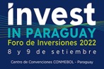

Overview
Paraguay hosted one of the most dynamic IDB–ALF Investment Forums, designed to present the country’s macroeconomic performance and investment potential to international investors. Known as one of the fastest-growing economies in South America, Paraguay used the mission to showcase competitiveness, stability and growth opportunities.
Strategic Positioning
- Energy powerhouse: home to Itaipú and Yacyretá, Paraguay is a leading producer and exporter of clean hydroelectric energy.
- Competitive labor and tax environment, with low corporate tax rates and a young workforce.
- Agricultural strength in soybeans, beef and other agro-industrial exports.
- Strategic logistics location in the heart of the Southern Cone.
Program Architecture
The Paraguay Investment Forum followed ALF and IDB’s methodology: senior government plenaries, sectoral panels on energy, agroindustry, infrastructure and services, B2B matchmaking sessions and networking events that created direct engagement between international investors and Paraguayan entrepreneurs.
Outcomes & Legacy
The mission generated energy sector interest, agroindustrial expansion opportunities, manufacturing partnerships and institutional linkages between Paraguayan chambers and international business councils. It repositioned Paraguay on the global investment map.
“The Paraguay forum was very well organized, offering an excellent opportunity to engage directly with ministers and decision-makers.”
Paraguay — Invest in Paraguay / IDB Investment Forum in Pictures
A visual record of institutional presentations, investment forums, B2B meetings and networking moments connected to this mission.
